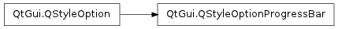

QStyleOptionProgressBar ¶

Inherited by: QStyleOptionProgressBarV2
Detailed Description ¶
The PySide.QtGui.QStyleOptionProgressBar class is used to describe the parameters necessary for drawing a progress bar.
Since Qt 4.1, Qt uses the PySide.QtGui.QStyleOptionProgressBarV2 subclass for drawing PySide.QtGui.QProgressBar .
An instance of the PySide.QtGui.QStyleOptionProgressBar class has type SO_ProgressBar and version 1.
The type is used internally by PySide.QtGui.QStyleOption , its subclasses, and qstyleoption_cast() to determine the type of style option. In general you do not need to worry about this unless you want to create your own PySide.QtGui.QStyleOption subclass and your own styles. The version is used by PySide.QtGui.QStyleOption subclasses to implement extensions without breaking compatibility. If you use qstyleoption_cast() , you normally do not need to check it.
If you create your own PySide.QtGui.QStyle subclass, you should handle both PySide.QtGui.QStyleOptionProgressBar and PySide.QtGui.QStyleOptionProgressBarV2 .
For an example demonstrating how style options can be used, see the Styles example.
- class PySide.QtGui. QStyleOptionProgressBar ¶
- class PySide.QtGui. QStyleOptionProgressBar ( other )
- class PySide.QtGui. QStyleOptionProgressBar ( version )
-
Parameters: - version – PySide.QtCore.int
- other – PySide.QtGui.QStyleOptionProgressBar
Constructs a PySide.QtGui.QStyleOptionProgressBar , initializing the members variables to their default values.
Constructs a copy of the other style option.
- PySide.QtGui.QStyleOptionProgressBar. StyleOptionVersion ¶
-
This enum is used to hold information about the version of the style option, and is defined for each PySide.QtGui.QStyleOption subclass.
Constant Description QStyleOptionProgressBar.Version 1 The version is used by PySide.QtGui.QStyleOption subclasses to implement extensions without breaking compatibility. If you use qstyleoption_cast() , you normally do not need to check it.
See also
QStyleOptionProgressBar.StyleOptionType
- PySide.QtGui.QStyleOptionProgressBar. StyleOptionType ¶
-
This enum is used to hold information about the type of the style option, and is defined for each PySide.QtGui.QStyleOption subclass.
Constant Description QStyleOptionProgressBar.Type The type of style option provided ( SO_ProgressBar for this class). The type is used internally by PySide.QtGui.QStyleOption , its subclasses, and qstyleoption_cast() to determine the type of style option. In general you do not need to worry about this unless you want to create your own PySide.QtGui.QStyleOption subclass and your own styles.
See also
QStyleOptionProgressBar.StyleOptionVersion
- PySide.QtGui.QStyleOptionProgressBar. minimum ¶
- PySide.QtGui.QStyleOptionProgressBar. maximum ¶
- PySide.QtGui.QStyleOptionProgressBar. progress ¶
- PySide.QtGui.QStyleOptionProgressBar. textAlignment ¶
- PySide.QtGui.QStyleOptionProgressBar. text ¶
- PySide.QtGui.QStyleOptionProgressBar. textVisible ¶